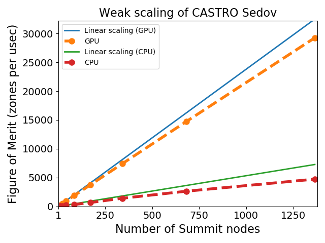
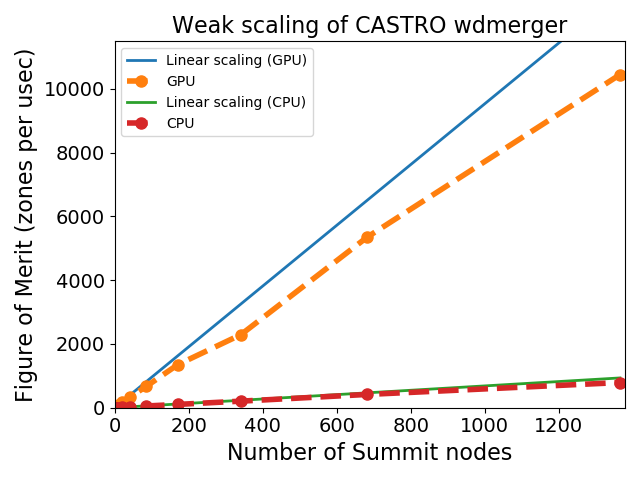

hydrodynamics + gravity
Castro's hydrodynamics is based on a compressible flow formulation in Eulerian coordinates. Castro uses a dimensionally-unsplit 2nd order Godunov method for construct the fluxes through the interfaces of each cell (a choice of piecewise linear or piecewise parabolic reconstruction + characteristic tracing is provided). The hydrodynamics is designed to work with a general (convex) equation of state, and a variety of Riemann solvers are provided.
Newtonian gravitational forces are supported through either a simple monopole approximation or the full Poisson equation using geometry multigrid. Isolated boundary conditions for the Poisson solver allow for modeling complex mass distributions. Several implementations for incorporating gravity into the energy equation are implemented, including an explicit source term and a conservative flux formulation.
radiation
Radiation support includes gray or multigroup flux
limited diffusion in a mixed-frame or comoving frame,
including all coupling terms to O(v/c). The radiation
update is done implicitly using the linear solvers
provided by
the hypre
package.
MHD
Ideal MHD is supported through a constrained transport,
unsplit (corner transport upwind) solver. This works together
with our general equation of state and reaction networks,
all the source terms, and the simplified spectral deferred corrections
time integration code path.
microphysics
A default γ-law equation of state and
general-composition non-reacting network as distributed
in the main Castro git repo. Additional equations of
state (including a general stellar EOS) and many nuclear
reaction networks are distributed in
the Microphysics
git repo. Maintaining them in a separate repo allows all of the
AMReX astrophysics codes share the same microphysics.
time-integration
The default solver use a second-order accurate update of hydrodynamics with Strang splitting to couple the reaction sources. Two different time-integration techniques are available: the simplified spectral deferred corrections (SDC) method uses the same hydrodynamics reconstruction but solves the coupled hydro-reaction system using with the full still reaction integration and a piecewise-constant-in-time hydrodynamics source. The true SDC method uses solves a nonlinear update for the coupled evolution of the reacting hydro system with either a 2nd order or 4th order (in space and time) discretization.
reproducibility
All Castro plotfiles store information about the build environment (build machine, build date, compiler version and flags), run environment (output date, output dir, number of processors, wall clock time), and code versions used (git hashes for the main Castro source and AMReX source, and support repos, if available). This allows for a recovery of the code base used for previous results.
Castro is run through a nightly regression test suite that checks the output, bit-for-bit, against stored benchmarks for many of the problem setups (including real science runs).
adaptive mesh refinement
The approach to AMR in Castro uses a nested hierarchy of logically-rectangular grids with simultaneous refinement of the grids in both space and time. The integration algorithm on the grid hierarchy is a recursive procedure in which coarse grids are advanced in time, fine grids are advanced multiple steps to reach the same time as the coarse grids and the data at different levels are then synchronized. A separate synchronization is done for gravity.

AMReX grid showing 2 levels.
parallel performance
Castro uses a hybrid programming model based on MPI and OpenMP. Distribution of grid patches to nodes using MPI provides a natural coarse-grained approach to distributing the computational work, while threading of loops over zones in a grid using OpenMP provides effective fine-grained parallelization. Castro uses a new tiled approach to OpenMP that can effectively take advantage of manycore processors like the Intel Phi's.

Castro strong scaling for a pure hydro + real EOS Sedov problem on the OLCF titan machine.

Castro strong scaling for the WD merger problem with full Poisson gravity on the OLCF titan machine.
GPU performance
Castro offloads to GPUs using MPI+CUDA, using the same computational kernels as we do with MPI+OpenMP. Presently the main hydrodynamics solve (CTU PPM), the gamma-law and stellar EOS, gravity, diffusion, and other source terms, and most of the nuclear reaction networks run on GPUs, allowing us to run entire simulations on GPUs.

GPU weak scaling on Summit for the Sedov problem. We see that the GPU version (6 GPUs /node) of the problem is about an order of magnitude faster than the CPU version (6 MPI × 7 OpenMP threads per MPI on each node).

GPU weak scaling on Summit for the WD merger problem. We see that the GPU version (6 GPUs /node) of the problem is much faster than the CPU version (6 MPI × 7 OpenMP threads per MPI on each node).